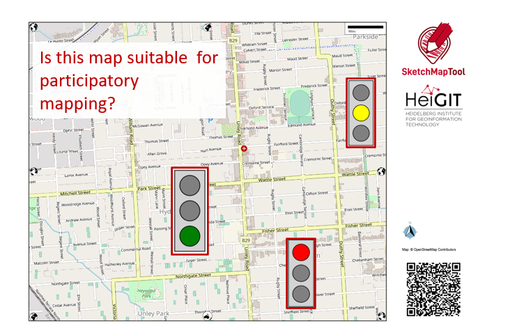
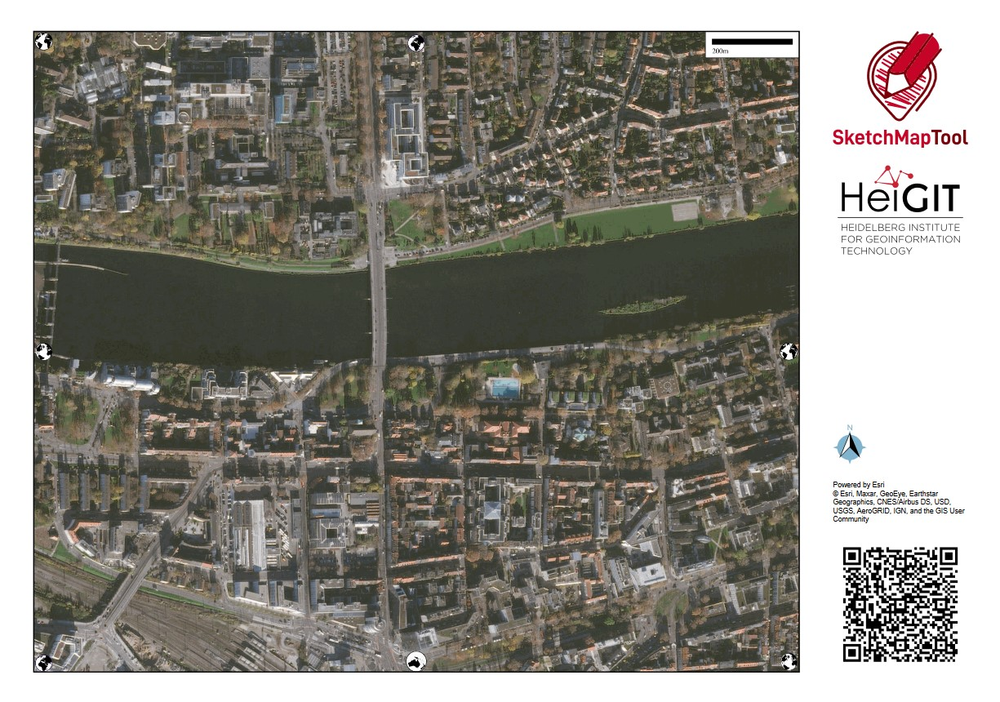
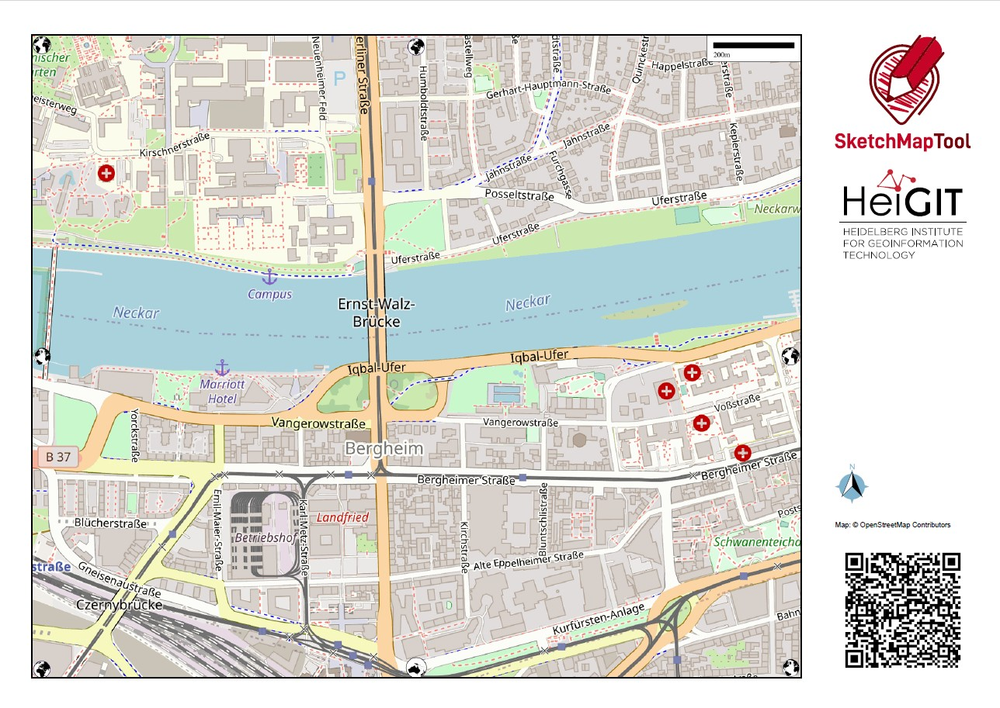
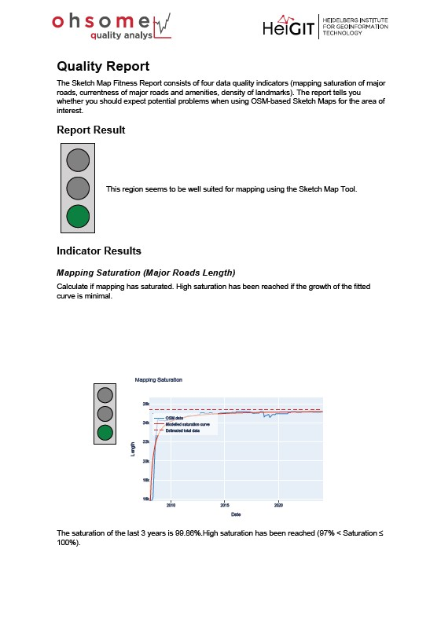
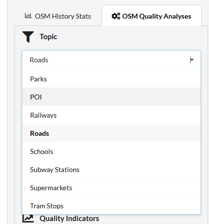
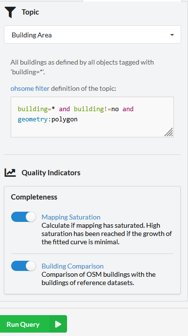

Sketch Map Tool Exercise 2 - Traffic light#
This exercise focuses on the first step of working with the Sketch Map Tool “Create a Sketch Map” and especially the characteristics, differences, weaknesses and strengths of the satellite and the OSM basemap.

SMT Traffic light#
Characteristics of the exercise#
Aim of this exercise:
Get familiar with the OSM and Satellite-image base maps and the Quality reports.
Get a feeling about how to assess the suitability of a basemaps and familiarise yourself with possible problems.
Get a first introduction to quality analysis
Type of trainings exercise:
This exercise can be used in online and in presence, and is focused on group discussions.
Focus group (GIS-Knowlege Level):
Planners/Facilitators (Beginners-level: no knowledge required about QGIS)
Estimated time demand for the exercise:
About 20 min in groups + each group 5 min to present + 10 min general discussion/buffer
Available data
Instructions for the trainers#
Trainers Corner
Prepare the training
Online access and devices (PC) to be able to use the Sketch Map Tool and create maps online.
For each group one individual set of the Sketch Maps (OSM + satellite) digitally or as a print and reports of one area OSM + satellite-map and the fitting report.
Take a look and make yourself familiar on the provided material for the exercise and the Sketch Map Tool in general. There are 5 case study maps available which contain each two sketch maps (one based on OSM, one on satellite imagery) and the respective Quality Report
Prepare a board (it can be a white board/flipchart/or digital e.g. Miro-board) where the participants can add their findings.
Check out How to do trainings? for some general tips on training conduction
Conduct the training:
Introduction:
Make sure everyone is familiar with the basic understanding about OSM and satellite maps. Introduce the aim of the exercise and the idea of the traffic lights and the analysis before you start the exercise!
Provide access to the needed material and build groups of 3 to 6 people in order to discuss the findings.
Time for group work:
Check-in with the groups to see if there are any questions or problems.
Prepare the presentation tool (e.g. Miro, White-board, etc.) for the wrap-up.
Wrap up:
All groups present their findings (each 5 min, make it short but display the maps they are talking about).
Discuss benefits, as well as challenges and problems in the use of the Sketch Map Tool.
Time to for open questions.
What you need to know - Background information#
Characteristics of the two base maps#
Satellite imagery |
OSM data |
|
|---|---|---|
Data source |
||
Example map |
 |
 |
Currentness |
The satellite imagery is typically within 3-5 years of currency. |
Current OSM-data is used in the base map. |
Biggest benefit |
Impression of the landscape and topography |
Clear outlines and at times labels especially of important infrastructure e.g. hospitals, possibility to improve the map by contributing to OSM. |
What does georeferenced mean?#
Non-Georeferenced image |
Georeferenced image – GeoTIFF |
|---|---|
This is just an image, even if you load it into QGIS and give it a coordination system it can´t be located and the image is shown somewhere in the Atlantic. |
The file contains information about its coordinate system and its location, so you can combine it with other geodata e.g. with GPS data. |
|
|


{kind=link}
Map Quality Check#
{kind=link}

Map Quality Check; Sketch Map Tool Heidelberg report#
The Sketch Map Tool can evaluate how well-suited an area of the OpenStreetMap (OSM) basemap is for participatory mapping based on a quality analysis of the OpenStreetMap (OSM) basemap data through the HeiGIT ohsome quality analyst.
The Map Quality Check assists in evaluating the suitability of the area of interest for participatory mapping through a quality analysis of the OpenStreetMap data with the HeiGIT ohsome quality analyst. The fitness report can be downloaded as a PDF file by clicking on the blue button. It provides an evaluation of the suitability of the local OSM data and recommendations for subsequent field data collection.
Step-by step introduction for participants#
Download a printable factsheet to guide you through this exercise here.
If you experiences any problems during your use of the Sketch Map Tool please take a look at the Help page.
Preparation#
Internet access and connection, and devices that enable to use the Sketch Map Tool.
1. Create the maps and reports#
Open the Sketch Map Tool
With you group, decide on an area fitting to your case-study. You can also choose an area you know very well or find interesting.
Zoom in and select your map area: Try different zoom levels and change the orientation.
Create several maps of the same area with different orientation, zoom-level or basemaps.
Click on the “Get quality report”-button for one of the maps to open a new tab with the ohsome dashboard and leave it open for later.
Sketch Map with a satellite base map |
Sketch Map with a OSM base map |
Map Quality Check |
|---|---|---|
Tip
To shorten the time, you can work with prepared cases.
2. Collect your insights to the following questions#
Add your insights to a presentation or share it on a (digital) board:
Note
The provided case studies are fictitious example locations selected for training purposes without further knowledge about the communities in the displayed areas. In this exercise we focus on the comparison of OSM and satellite imagery base maps, regardless of the exact location of the map section on the world map.
Which difference can you detect between satellite and OSM basemaps?
What are the main characteristics of the area you see on the basemap? Describe separately both basemaps, the one with the satellite imagery and the OSM data.
Could you orient yourself on the basemap? Are there points of interests (POIs, which are important for map orientation) or something else that you could use as an orientation point?
Would you say the basemaps are suited for participatory mapping? Reason your answer and think about participants that are not familiar with basemaps.
Think about what you could map on these base maps, e.g. frequently flooded areas or water access points. Is the level of detail of the base maps (satellite and OSM) suitable for that, or would you need to zoom in or out a bit more?
In which use cases would you prefer the OSM basemap? In which use cases would you prefer the satellite basemap?
Take a look at the quality aspects of the OSM data behind your map
Why is this relevant?
OpenStreetMap (OSM) is more than a map, it is mapped by volunteers in various ways over time. This setup could mean that some information of the OSM base map you see is more or less updated or complete, depending on the number of volunteers that are active in an area of interest at what time. It could therefore, for example, be the case that an old building which burned down 5 years ago is still on the map, or that a whole other part of the city is not yet mapped, while another part of the city is mapped in detail and up-to-date. Therefore, it is useful to assess the OSM data.
How do you know if the OSM data in your area of interest is good enough for mapping?
First of all, don’t worry: Just because some houses are not mapped yet or the map is a bit outdated doesn’t mean you can’t use it as a basemap for participatory mapping. It is, however, important to know how accurate it is.
One way to find out if the OSM data in your basemap is good enough to start mapping is to discuss the basemap with locals and/or to try orienting yourself with the map.
Using the ohsome Dashboard:
Take a look at the ohsome dashboard of your selected region or open the screenshots of the ohsome dashboard if you prefer to work with a pre-prepared case.
Take a look at the first automatically created analysis results on the road network
Currentness of the road network:
What is the level of currentness?
What is interesting about the graph (e.g. are there special peaks)?
How many features were edited over 8 years ago?
Based on this one indicator, do you think the map is good enough as a base map?
Mapping saturation of the road network
What is the level of completeness?
Looking at the road network on your map, does it look like what you expected?
What is interesting about the graph (e.g. are there special peaks)?
Based on this one indicator, do you think the map good enough as a base map?
Select another topic of your interest, like POIs, parks or the building area. Ask yourself similar questions as in the step before, but also reflect on how important, e.g. buildings are for the participant’s orientation in the map or what you would like to map on this base map.
You can select the topics in the top left corner.
{kind=link}

Then run the analysis by clicking the green button, then the analysis will start and your new results will show up on top.
{kind=link}

If you take a look at the labels in the left corner of your result graphs, you get a rough estimate in traffic light colours about the level of, e.g. the completeness- if it is high, medium or low. If the level is low, especially for important aspects like the road mapping saturation, please take a proper look at whether your base map seems good enough for participatory mapping and consider organizing a mapathon to improve the OSM data before you use it in a Sketch Map (link to mapathon FAQ).
3. Wrap-up:#
Make some notes and prepare yourself for a short presentation of your maps to share with the other participants:
Prepare your Presentation and decide who is going to present.
Think about open questions, as well as feedback to the exercise
Why could the ohsome dashboard with its statistics be interesting to you?
You think about organising a mapathon, but you’re not sure if this is necessary? The ohsome dashboard offers you some numbers and graphs on currentness, map saturation, and attribute completeness to base your decision on.
You already planned a mapathon, because you can see that the map is not good enough. Take a look at the ohsome dashboard of your selected area before and after your activities to see and showcase your mapathons’ impact on the OSM data.
You are just curious to learn more about data quality analysis. Then the dashboard is also the place to start.